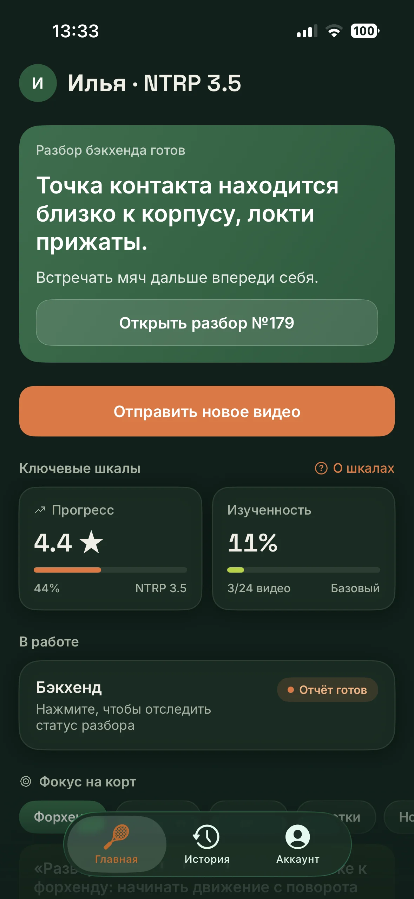
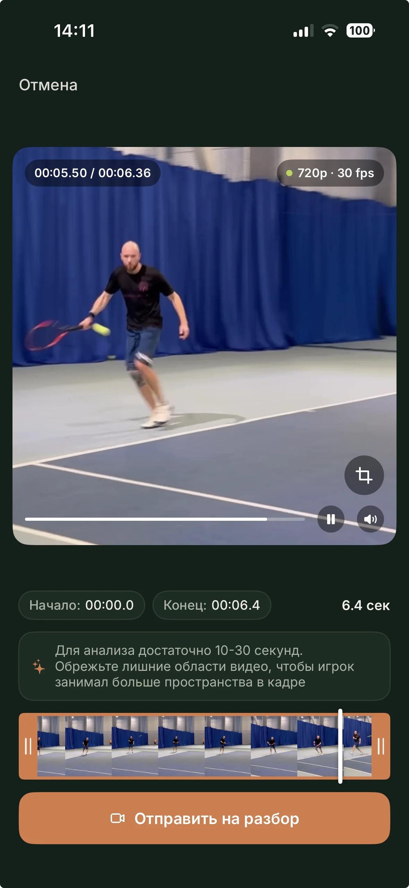
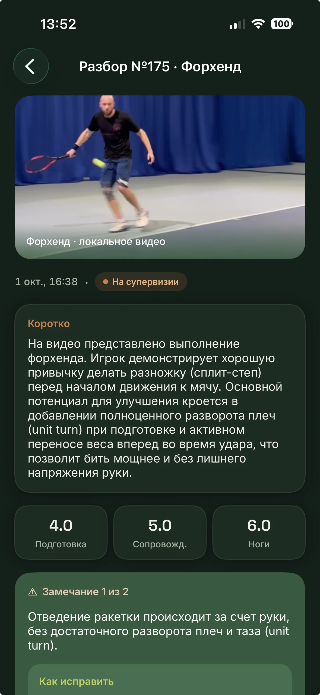

Снимаешь 10–30 секунд
Один удар, телефон сбоку или сзади на уровне пояса. Хватит камеры телефона — ни штатива, ни второго человека.
Снимаешь удар на телефон — модель разбирает его с учётом анкеты: уровня, стажа, руки и частоты тренировок, а также прошлых видео по этому удару. Штатный тренер читает разбор и дополняет его живым комментарием. Следующее видео показывает, что изменилось.
Разборы бесплатны в открытой бете. Приложение для iPhone — скоро.

Три причины, по которым видео с тренировки обычно не превращается в прогресс.
Посмотрел своё видео и не понял, что не так: вроде похоже на то, как играют нормально.
Советы из роликов — про чужой удар. Примерить их на себя не получается.
Через месяц занятий непонятно, стало ли лучше и что вообще изменилось.
Один удар, телефон сбоку или сзади на уровне пояса. Хватит камеры телефона — ни штатива, ни второго человека.
ИИ разбирает удар с учётом твоей анкеты и прошлых видео по этому удару: что не так, почему это важно и что делать. Штатный тренер читает разбор и дополняет его живым комментарием.
Разбор помнит твои прошлые видео, текущий фокус и повторяющиеся ошибки. Видно динамику, а не разовый совет.
Продукт ведёт один удар за раз — от замечания до упражнения и следующей съёмки.
Модель смотрит видео и знает твою анкету: уровень, стаж, руку и частоту тренировок. Это не средние советы из интернета, а разбор про твою игру.
Разбор видит прошлые сессии по этому удару, твой фокус — он не меняется, пока нет улучшения, — и хронические ошибки. Поэтому он не начинается с нуля.
Штатный тренер читает ИИ-разбор и дополняет его тем, что видно только человеку. Пока он не посмотрел, разбор помечен «На супервизии».
Форхенд, бэкхенд, подача, у сетки, ноги, розыгрыш. Прогресс считается по каждому отдельно — подачу не сравнивают с форхендом.
К замечанию прикладываются упражнения, которые можно сделать на ближайшей тренировке. С описанием и ссылкой.
Оценки по ударам, изученность и уровень NTRP. Видно, что растёт, а что стоит на месте — и по какому удару мало видео.


Мы разбираем видео, а не заменяем занятия с тренером на корте. Лучше сказать это сразу.
Открой бота, пришли клип на 10–30 секунд и выбери удар. ИИ-разбор придёт сразу, комментарий тренера — следом.